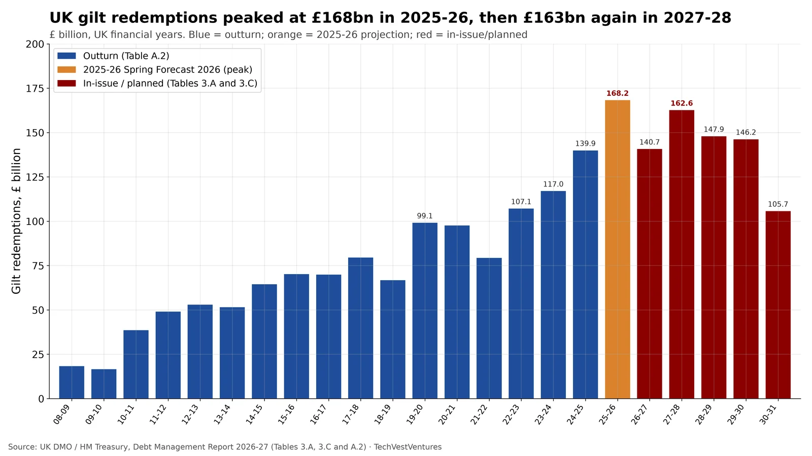

Q8. UK Maturity Wall

Gilt redemptions by UK financial year, from the Debt Management Report 2026-27. Outturn redemptions rose from £18.3 billion in 2008-09 to £139.9 billion in 2024-25. The Spring Forecast 2026 projection for 2025-26 is £168.2 billion, the highest year in this series — about 9× the 2008-09 total. 2026-27 gilt redemptions are planned at £140.7 billion (Table 3.A; a further £0.5 billion sovereign Sukuk also matures that year). Gilts already in issue then require £162.6 billion in 2027-28, £147.9 billion in 2028-29, £146.2 billion in 2029-30 and £105.7 billion in 2030-31 (Table 3.C, net of government holdings).
- Wholesale central-government sterling debt was £2,731.5 billion at end-December 2025; average maturity was 13.4 years and 8.2% matured within one year (Table A.1).
- The DMO’s 2026-27 net financing requirement is £257.1 billion, to be met by £252.1 billion of gilt sales plus £5 billion net Treasury-bill issuance (Table 3.A).
- Table 3.C warns that further issuance of bonds redeeming inside 2027-31 will raise those later totals.
Note: 2019-20 redemptions in Table A.2 include £0.2 billion for the 2014 sovereign Sukuk. 2026-27 is shown as gilt redemptions only (£140.7 billion); the Sukuk maturing in July 2026 is extra. Forward years are gilts currently in issue, net of official holdings, as of the Spring Forecast 2026 — not a forecast of total future sales. The report itself notes that the UK’s average debt maturity remains longer than the rest of the G7, which spreads this wall rather than removing it.
Sources: UK DMO / HM Treasury, Debt Management Report 2026-27 (Tables 3.A, 3.C and A.2)